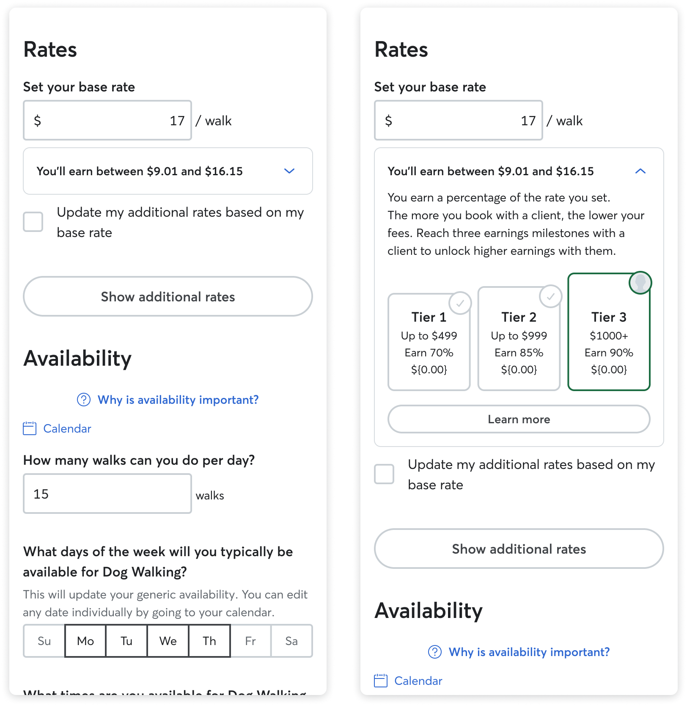

Rover · 2025 · Strategy · In Flight
Relationship-based
Graduated Fees
~40% higher take · 23% take-per-relationship target
Present deck →
WIP
Today, Rover charges the same fee on a sitter's first booking with a new client as on their 20th booking with a long-term trusted relationship. Frustration about fees is a core driver of diversion.
Internal analysis showed that capturing repeat-relationship diversion could make Rover's take ~40% higher. The provider strategy targets ~23% take-per-relationship growth. A flat fee doesn't map to that reality.

We assessed three possible models against: comprehension, fairness, gaming risk, revenue impact, and segment impact on top sitters who drive ~75% of earnings.
Relationship-based was the best match to how sitters think. They track clients, not annual totals. Testing relationship-based GBV first in Canada as a proxy for the US market.

Higher fee on the first slice of relationship GBV (e.g. 28–35%), lower fee once the relationship hits a milestone (e.g. 10–15% after $X). Each owner–sitter pair has its own progress; once unlocked, the lower tier is permanent.
Sitters currently can't see GBV per client. A multi-step GBV model is complex to understand. A dedicated Relationship page is the solution — GBV progress tracker, fee tier, transaction history per client.



Model mechanics comprehension: sitters struggled with cumulative GBV, milestones, permanent reductions. We leaned on progressive disclosure and anchored everything around "this relationship with this client."
Sense of agency: some milestones depended on owner behaviour. We focused UI on actions sitters control and avoided over-promising.

High comprehension and perceived fairness among top sitters in Canada.
No material increase in diversion on new relationships despite higher upfront fees.
Improved on-platform repeat bookings for eligible relationships, 90-day window.
Per-relationship GBV growth vs. control. Clean signal → broader rollout.